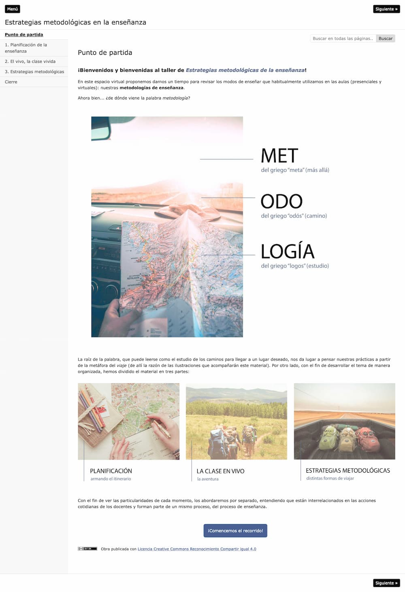

🤔 ¿Qué es HIPERMEDIAL?
Nos referimos a objetos digitales que presentan cualidades hipertextuales y multimedia.
Nos referimos a objetos digitales que presentan cualidades hipertextuales y multimedia.
1. Hipertextual: refiere a textos enriquecidos con enlaces a otros textos o a puntos específicos dentro del mismo. Su principal aporte es la disrupción de la linealidad en la lectura, permitiendo a quien lee tomar distintos caminos a partir de un mismo material.
2. Multimedia: refiere a contenidos construidos con más de un tipo de medio (🔠 texto, 🖼 imagen, 🔊 audio, 📹 video, 🎮 objetos interactivos). Su principal aporte es la potencia expresiva que se obtiene al apelar a más de un sentido.
Es decir, hablamos de contenidos conformados por diferentes medios y que permiten recorridos no lineales y/o interactivos.
Veamos un ejemplo.
🔑 Algunos de los beneficios de los formatos hipermediales son:
Esta mini-guía es una sistematización del proceso de producción de dos materiales educativos hipermediales:
El taller “Estrategias metodológicas de la enseñanza” está dirigido a docentes de la Facultad de Ciencias Económicas de la UNC como una formación complementaria para el ejercicio de tareas docentes y su cursado es opcional. El taller es un espacio de reflexión sobre las propuestas de enseñanza y las diversas alternativas que se proponen en el aula, en pos de generar el aprendizaje de los estudiantes. El objetivo es abrir el horizonte a nuevas posibilidades metodológicas, dando lugar a la innovación. Está organizado en tres encuentros presenciales, y las y los cursantes deben realizar una actividad final que consiste en una planificación de clase poniendo en juego los contenidos ofrecidos en este taller.
Para este caso se propuso la edición del material teórico (un PDF) en un material hipermedial que amplíe y facilite su lectura.

Clic aquí para acceder al material.
La asignatura electiva Comercio Electrónico forma parte de las carreras de grado de Contador Público y Lic. en Administración de la Facultad de Ciencias Económicas UNC. El cursado se desarrolla a través de clases teórico-prácticas presenciales con actividades virtuales en el entorno Moodle. La materia admite la inscripción de hasta 140 estudiantes. La evaluación se realiza a través de un trabajo final integrador que complementa las instancias evaluativas individuales. Dentro del aula virtual, los contenidos de la materia son presentados a través de Google Slides y videos insertados desde un canal de YouTube.
Para este caso se desarrolló un prototipo de material educativo que incluye dos piezas centrales: una presentación de curso sobre los contenidos de la Unidad 1 y, dentro de la misma, un video interactivo a partir de una grabación de la clase 1 (al video se les agregaron tips, actividades, enlaces y una línea de tiempo).
Al final de cada paso podrás ver ejemplos, notas o aprendizajes que surgieron en cada caso y nos resultaron valiosos para compartir.
La gran variedad de posibilidades que brinda lo hipermedial hace casi imposible determinar una metodología estándar para su elaboración (no será el mismo proceso si se trata de un video interactivo o si nos proponemos hacer un juego de preguntas y respuestas). Aquí no hay recetas ni llaves maestras. Pero por esta misma complejidad creemos valioso compartir esta mini-guía; no tanto como un protocolo genérico sino como la ayuda que nos gustaría tener para iniciar un proceso de producción. Es una guía simple, con pasos concretos que van marcando los hitos importantes y los objetivos a cumplir para encaminar la elaboración (o mejora) de un material hipermedial.
¿Comenzamos?
🎯 1. Definir el contenido y los objetivos
Obra publicada con Licencia Creative Commons Reconocimiento Compartir igual 4.0